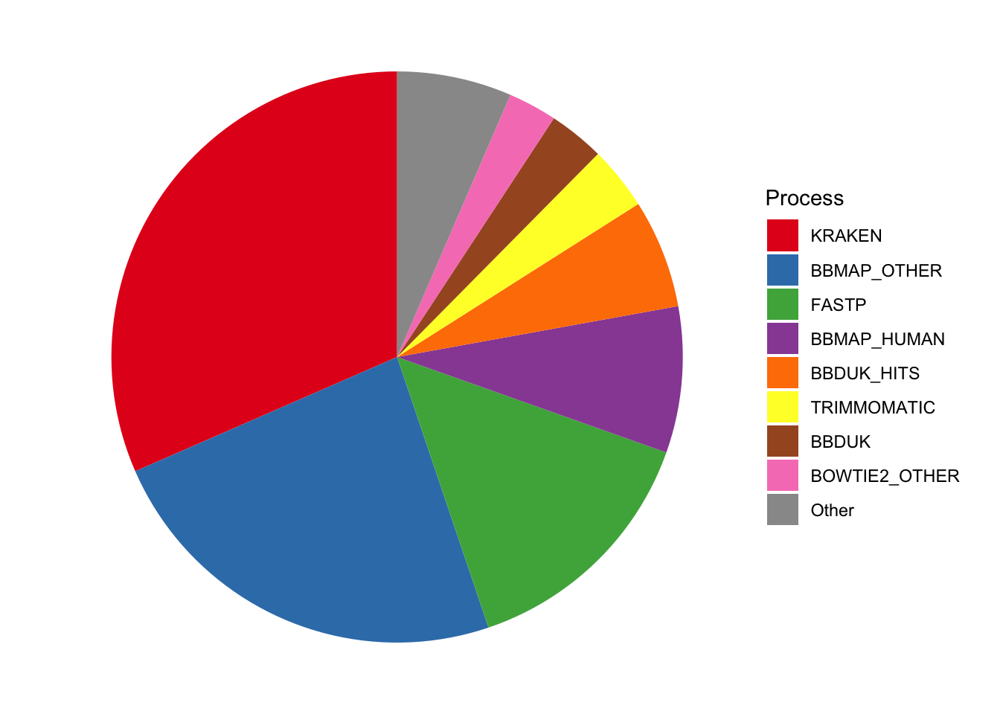
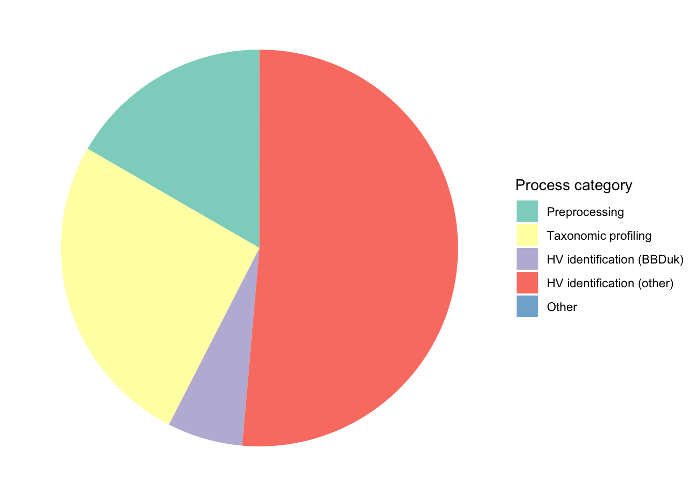
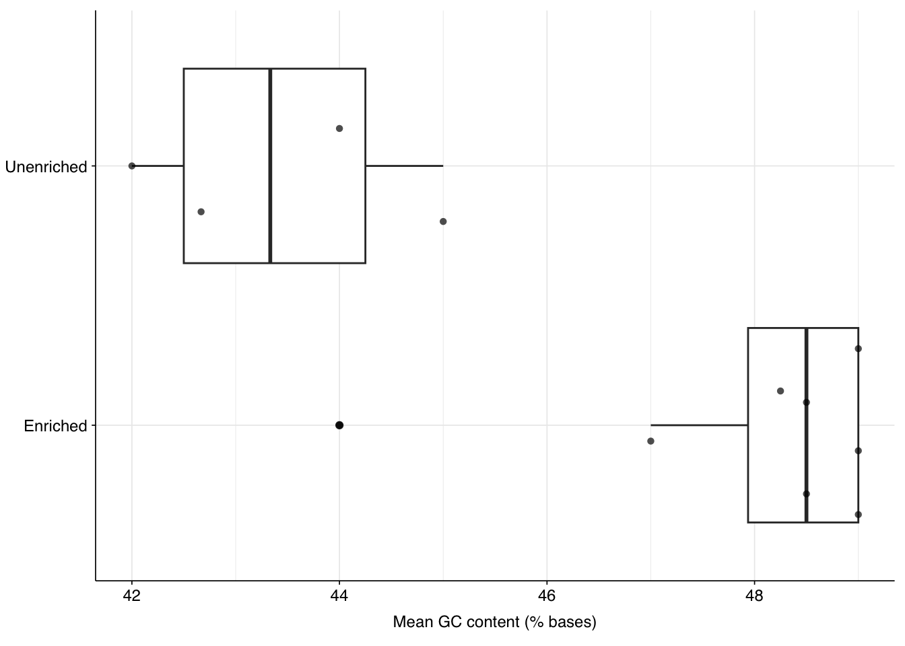
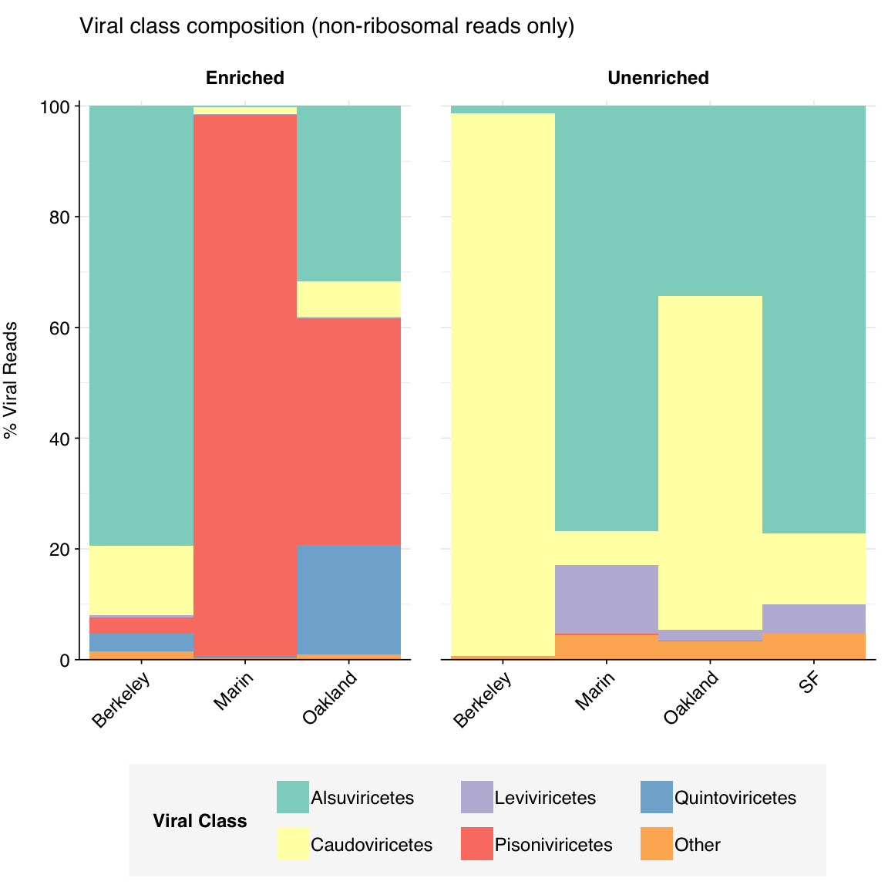
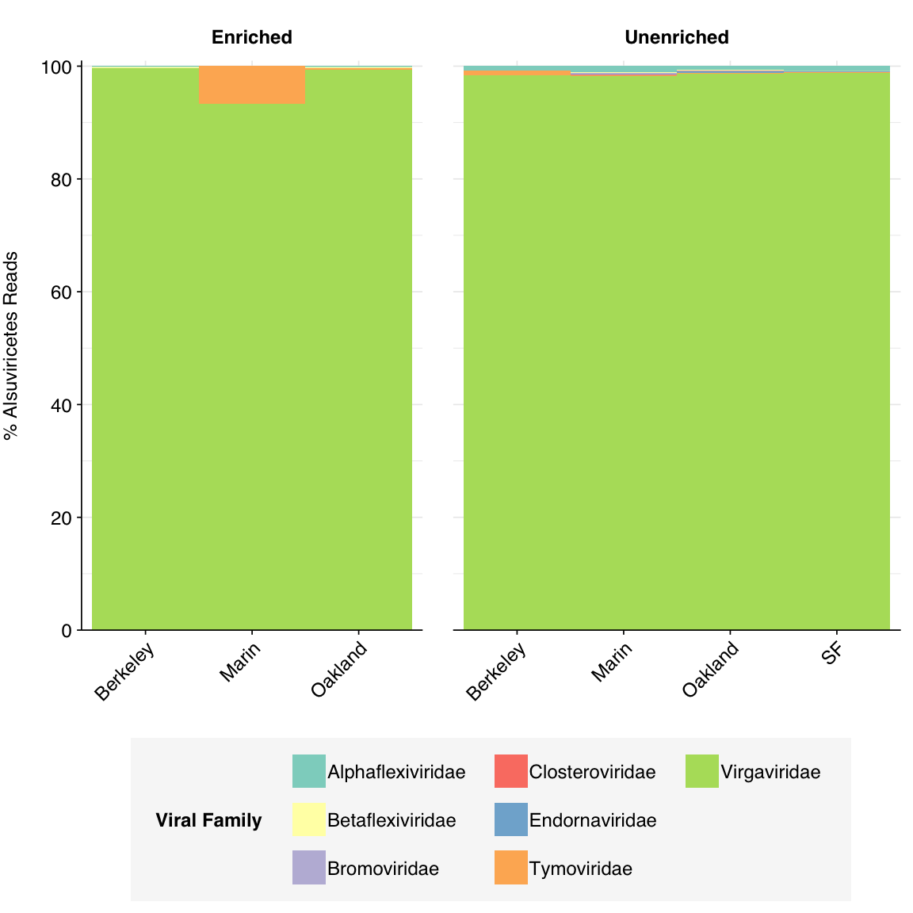
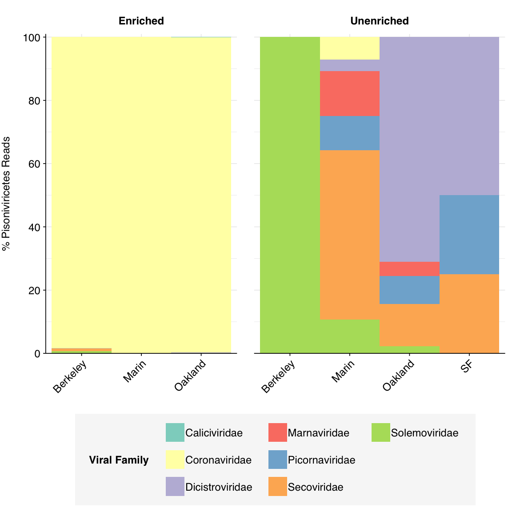
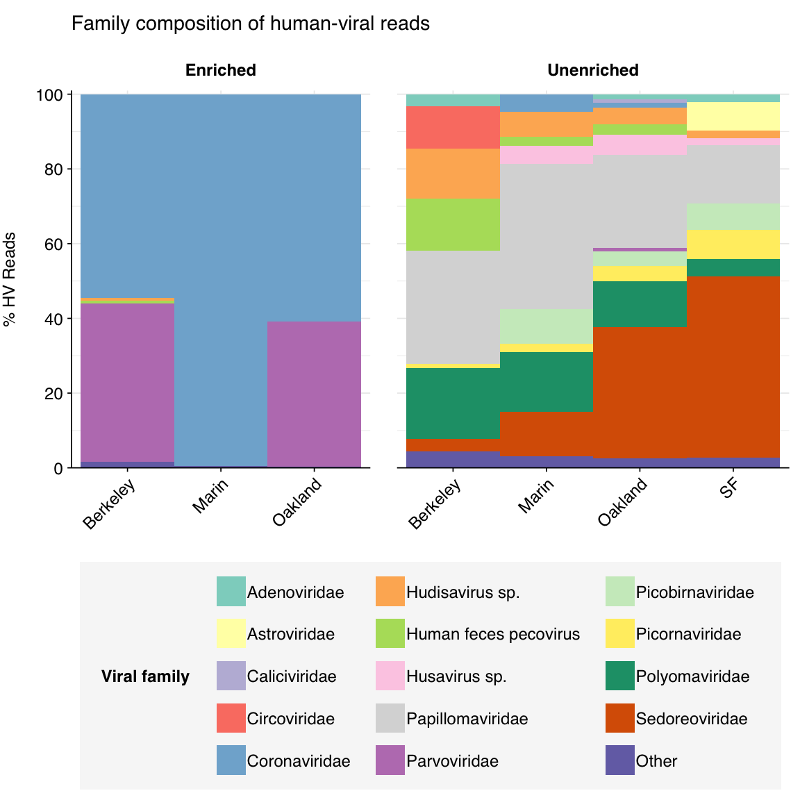
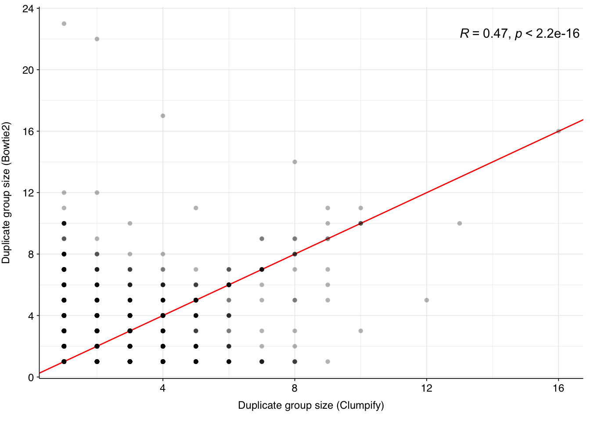

It’s been quite a while since I last made a public notebook post, as I’ve been focusing on pipeline development and analysis of our increasing stream of private datasets. Recently, pipeline development has accelerated with the addition of Harmon Bhasin to the NAO computational team. Harmon and I recently finished a tranche of issue fixes and new features, and I’m writing this notebook as a way to both demo those features and test them before merging the new pipeline version to the main branch.
My initial analysis of the Crits-Christoph dataset was quite some time ago now (1,2,3), back when I was still figuring out the basic functionality of the pipeline. We’ve come quite a long way since then, so this is a good opportunity to apply a more streamlined and well-tested analysis process to a very early dataset.
As a reminder, the Crits-Christoph data comprises 18 samples, all of which were collected as 24-hour composite samples of raw sewage collected from wastewater interceptor lines in four different locations in the SF Bay Area (Berkeley, Oakland, San Francisco, and Marin). Several different extraction protocols were used; for simplicity, I won’t be including this as a variable in this analysis, since the number of samples is too small to draw strong conclusions about inter-protocol differences.
Seven of the samples (the “unenriched” fraction) underwent bacterial ribodepletion followed by untargeted metagenomic RNA-sequencing. The other 11 samples (the “enriched” fraction) underwent panel enrichment for respiratory viruses using the Illumina Respiratory Virus Oligo Panel, and no ribodepletion. In total, the unenriched samples comprise roughly 298M read pairs (mean 42.5M per sample) while the enriched samples comprise roughly 9M (mean 0.8M per sample).
1 Cost profiling
As for the previous datasets I’ve run through this version of the pipeline, I generated data on computing resources consumed using nextflow log and AWS Cost Explorer.
# Parse trace datatrace_cpuh_summary<-trace%>%group_by(dataset, job)%>%summarize(cpu_hours =sum(cpu_hours), .groups ="drop_last")%>%mutate(p_cpu_hours =cpu_hours/sum(cpu_hours))cpuh_total<-trace_cpuh_summary%>%summarize(cpu_hours =sum(cpu_hours))#==============================================================================# Aggregate data for plotting#==============================================================================# Group processes across subworkflowsjobs_major<-trace_cpuh_summary%>%group_by(job)%>%filter(p_cpu_hours==max(p_cpu_hours))%>%arrange(desc(p_cpu_hours))%>%ungroup%>%head(8)%>%pull(job)trace_cpuh_display<-trace_cpuh_summary%>%mutate(minor =!(job%in%jobs_major), job_display =ifelse(minor, "Other", job))%>%group_by(dataset, job_display, minor)%>%summarize(cpu_hours =sum(cpu_hours), .groups ="drop")%>%arrange(minor, desc(cpu_hours))%>%mutate(job_display =fct_inorder(job_display))# Break down log files into subworkflows, segregating BBDUK from the rest of the HV workflowcat_levels<-c("Preprocessing", "Taxonomic profiling","HV identification (BBDuk)", "HV identification (other)", "Other")trace_cpuh_categories<-trace%>%mutate(category =case_when(grepl("^RUN:RAW", process)~"Preprocessing",grepl("^RUN:CLEAN", process)~"Preprocessing",grepl("^RUN:PROFILE", process)~"Taxonomic profiling",grepl("^RUN:HV:BBDUK", process)~"HV identification (BBDuk)",grepl("^RUN:HV", process)~"HV identification (other)",TRUE~"Other"))%>%group_by(dataset, category)%>%summarize(cpu_hours =sum(cpu_hours), .groups ="drop")%>%mutate(p_cpu_hours =cpu_hours/sum(cpu_hours), category =factor(category, levels =cat_levels))
In total, processing the Crits-Christoph data consumed roughly 99 CPU-hours. While I don’t have AWS costs for this run, at our usual cost per CPU-hour, I estimate this cost roughly $5-8.
Here’s the breakdown of CPU-hours by process and subworkflow:
Code
# Group by run group rather than datasettrace_cpuh_display_agg<-trace_cpuh_display%>%group_by(job_display, minor)%>%summarize(cpu_hours =sum(cpu_hours), .groups ="drop")# Plotg_log_pie<-ggplot(trace_cpuh_display_agg, aes(x=1, y=cpu_hours, fill=job_display))+geom_col(width=1, position="fill")+coord_polar("y", start =0)+scale_fill_brewer(palette="Set1", name="Process")+theme_void()g_log_pie

Figure 1.1: Pie charts of CPU-hour composition of v2.3 pipeline across processes.
Code
# Group by run group rather than datasettrace_cpuh_categories_agg<-trace_cpuh_categories%>%group_by(category)%>%summarize(cpu_hours =sum(cpu_hours), .groups ="drop")# Plotg_cat_pie<-ggplot(trace_cpuh_categories_agg,aes(x=1, y=cpu_hours, fill=category))+geom_col(width=1, position="fill")+coord_polar("y", start =0)+scale_fill_brewer(palette="Set3", name="Process category")+theme_void()g_cat_pie

Figure 1.2: Pie charts of CPU-hour composition of v2.3 pipeline across process categories
The 18 libraries in the Crits-Christoph dataset comprised roughly 306M read pairs, corresponding to roughly 46 gigabases of sequence data. The great majority of this data (~97%) was generated from unenriched libraries.
Figure 2.1: Read and base counts for different samples.
On average, read preprocessing with FASTP resulted in the loss of roughly 2.1% of reads in unenriched libraries and 6.8% in enriched libraries. A minority of enriched libraries showed even higher losses:
Unenriched samples show somewhat lower average GC content than enriched samples, with the former showing a mean GC content of 43.4% and the latter 47.9%:
Code
# Get raw GC contentgc_content<-basic_stats_raw%>%group_by(across(all_of(grouping_cols)))%>%summarize(mean_percent_gc =mean(percent_gc), .groups ="drop")# Plotg_gc_st<-ggplot(gc_content, aes(x=enrichment, y=mean_percent_gc))+geom_boxplot()+geom_quasirandom(alpha=0.7, shape=16)+scale_y_continuous(name="Mean GC content (% bases)")+coord_flip()+guides(color=guide_legend(nrow=2))+theme_base+theme(axis.title.y =element_blank())g_gc_st

Figure 2.6: Distribution of GC content across samples.
3 Taxonomic profiling
3.1 Domain-level classification
As usual for wastewater, samples across all deliveries were dominated by bacterial and unassigned sequences:
Figure 3.1: Domain-level composition of samples, as measured with Kraken2 on 1M reads per sample.
3.2 Ribosomal content
The above plot makes it clear that, consistent with previous analysis of this dataset, the unenriched samples (which underwent ribodepletion) show much lower ribosomal content than the enriched samples (which did not), despite the latter having undergone viral panel enrichment. Quantitatively, enriched samples contained 63.4% ribosomal sequences, while unenriched samples contained only 5.5%.
Figure 3.2: Boxplots of ribosomal content by enrichment status.
3.3 Total viral content
Code
# Viral content across all readsp_reads_viral_all<-taxa_tab%>%mutate(viral =name=="Viruses")%>%group_by(across(all_of(grouping_cols)), viral)%>%summarize(n_reads =sum(n_reads), .groups ="drop_last")%>%mutate(p_reads =n_reads/sum(n_reads))%>%filter(viral)# Aggregatep_reads_viral_all_agg<-taxa_tab%>%mutate(viral =name=="Viruses")%>%group_by(across(all_of(grouping_cols_agg)), viral)%>%summarize(n_reads =sum(n_reads), .groups ="drop_last")%>%mutate(p_reads =n_reads/sum(n_reads))%>%filter(viral)
Total viral content in the Kraken data was 4.0% in the enriched samples and 0.77% in the unenriched samples, demonstrating the efficacy of panel enrichment:
Figure 3.3: Fraction of viral reads across samples, as measured with Kraken2 on 1M reads per sample.
3.4 Taxonomic composition of viruses
Code
# Set up base plotg_comp_base<-ggplot(mapping =aes(x=location, y=p_reads, fill=label))+facet_grid(.~enrichment, scales ="free_x", space ="free_x", labeller =label_wrap_gen(width =10))+guides(fill =guide_legend(ncol=3))+theme_tilt# Specify palettepalette_viral<-c(brewer.pal(12, "Set3"), brewer.pal(8, "Dark2"))scale_fill_viral<-purrr::partial(scale_fill_manual, values =palette_viral)# Set up composition scalescale_y_composition<-purrr::partial(scale_y_continuous, limits =c(0,1.01), breaks =seq(0,1,0.2), expand =c(0,0), labels =function(y)y*100)# Set up geomgeom_composition<-purrr::partial(geom_col, position ="fill", width =1)# Specify major family thresholdmajor_threshold<-0.01
As is normal for wastewater samples, the unenriched samples are dominated by Alsuviricetes (a class of eukaryotic viruses which includes Virgaviridae), Leviviricetes (a class of RNA phages), and Caudoviricetes (tailed DNA phages). Alsuviricetes and Caudoviricetes were also prominent in enriched samples; however, two other virus classes, Pisoniviricetes (which includes Picornaviridae and Coronaviridae, among other animal viruses) and Quintoviricetes (parvoviruses) are also prominent. Both of these additional classes include prominent human pathogens that are included in the Illumina Respiratory Virus Panel.
Code
# Identify major viral classes and collapse othersviral_classes_major_noribo<-viral_classes_noribo%>%group_by(name, taxid)%>%filter(max(p_reads_viral)>=major_threshold)%>%ungroupviral_classes_minor_noribo<-viral_classes_major_noribo%>%group_by(across(all_of(grouping_cols)), n_reads_viral)%>%summarize(n_reads_clade =n_reads_viral[1]-sum(n_reads_clade), p_reads_viral =1-sum(p_reads_viral), .groups ="drop")%>%mutate(name ="Other", taxid =NA, rank ="F")viral_classes_levels_noribo<-viral_classes_major_noribo%>%pull(name)%>%sort%>%unique%>%append("Other")viral_classes_out_noribo<-bind_rows(viral_classes_major_noribo, viral_classes_minor_noribo)%>%mutate(name =factor(name, levels =viral_classes_levels_noribo))# Prepare data for plottingviral_classes_display_noribo<-viral_classes_out_noribo%>%rename(p_reads =p_reads_viral, label =name)# Plotg_classes_noribo<-g_comp_base+geom_composition(data=viral_classes_display_noribo)+ggtitle("Viral class composition (non-ribosomal reads only)")+scale_y_composition(name="% Viral Reads")+scale_fill_viral(name="Viral Class")g_classes_noribo

Figure 3.4: Class composition of Kraken2-identified viral reads across samples, excluding putative ribosomal reads.
As usual, Alsuviricetes is overwhelmingly dominated by Virgaviridae, with a small minority of other plant viruses:
Code
# Get reads for major eukaryotic viral classeseuk_classes<-c("Alsuviricetes", "Pisoniviricetes", "Quintoviricetes")euk_taxids<-sapply(euk_classes, function(x)viral_taxa%>%filter(name==x)%>%pull(taxid))euk_taxid_desc<-sapply(euk_taxids, add_descendent_taxids, reference=viral_taxa)euk_families<-lapply(euk_classes, function(x)viral_families_noribo%>%filter(taxid%in%euk_taxid_desc[[x]])%>%mutate(class=x))%>%bind_rows%>%group_by(across(all_of(grouping_cols)), class)%>%mutate(n_reads_class =sum(n_reads_clade), p_reads_class =n_reads_clade/n_reads_class)euk_families_display<-lapply(euk_classes, function(x)euk_families%>%filter(class==x)%>%rename(p_reads =p_reads_class, label =name))%>%setNames(euk_classes)# Plotg_euk_families<-lapply(euk_classes, function(x)g_comp_base+geom_composition(data=euk_families_display[[x]])+scale_y_composition(name=paste0("% ", x, " Reads"))+scale_fill_viral(name="Viral Family"))%>%setNames(euk_classes)g_euk_families[["Alsuviricetes"]]

Figure 3.5: Family composition of Kraken2-identified Alsuviricetes reads, excluding putative ribosomal reads.
Pisoniviricetes reads in enriched samples, meanwhile, are overwhelmingly made up of coronaviruses:
Code
g_euk_families[["Pisoniviricetes"]]

Figure 3.6: Family composition of Kraken2-identified Pisoniviricetes reads across samples, excluding putative ribosomal reads.
4 Human-infecting virus reads
Code
# Import and format readshv_reads_paths<-file.path(hv_dirs, "hv_hits_putative_collapsed.tsv.gz")mrg_hv<-lapply(hv_reads_paths, read_tsv, show_col_types =FALSE, col_types =cols(taxid_all ="c", assigned_taxid_all ="c"))%>%bind_rows%>%inner_join(metadata, by="sample")%>%mutate(kraken_label =ifelse(assigned_hv, "Kraken2 HV assignment","No Kraken2 assignment"), adj_score_max =pmax(adj_score_fwd, adj_score_rev), highscore =adj_score_max>=20)# Raise to the class level and exclude phagesphage_taxids<-c("2731619", "2732413", "2732411")# Caudoviricetes, Malgrantaviricetes, Faserviricetesmrg_hv_named<-mrg_hv%>%left_join(viral_taxa, by="taxid")mrg_hv_class<-raise_rank(mrg_hv_named, viral_taxa, "class")mrg_hv_class_filtered<-filter(mrg_hv_class, !taxid%in%phage_taxids)mrg_hv_filtered<-mrg_hv%>%filter(seq_id%in%mrg_hv_class_filtered$seq_id)# Get read counts and fractionsread_counts_raw<-select(basic_stats_raw, sample, n_reads_raw =n_read_pairs)read_counts_hv<-count(mrg_hv_filtered, sample, name="n_reads_hv")read_counts<-left_join(read_counts_raw, read_counts_hv, by="sample")%>%mutate(n_reads_hv =replace_na(n_reads_hv, 0))%>%inner_join(metadata, by="sample")%>%select(sample, all_of(grouping_cols), n_reads_raw, n_reads_hv)%>%mutate(n_samples =1, p_reads_total =n_reads_hv/n_reads_raw)# Aggregate read countsread_counts_agg<-read_counts%>%group_by(across(all_of(grouping_cols_agg)))%>%summarize(n_reads_raw =sum(n_reads_raw), n_reads_hv =sum(n_reads_hv), n_samples =sum(n_samples), .groups="drop")%>%mutate(p_reads_total =n_reads_hv/n_reads_raw)
4.1 Overall relative abundance
Next, I calculated the number of human-infecting virus (HV) reads as a fraction of total raw reads:
Figure 4.1: Unique human-infecting virus reads as a fraction of all raw input reads, for enriched and unenriched samples.
The effect of panel enrichment on HV read fraction was much stronger than on total viral read fraction, with overall relative abundance increasing from 1.23e-05 to 1.14e-02, or almost 1000-fold.
4.2 Overall taxonomy and composition
HV reads in enriched samples are dominated by coronaviruses and parvoviruses, which makes sense given the composition of the panel and what we saw for total-virus composition. Unenriched samples’ HV composition, meanwhile, was quite unusual for wastewater: while some standard enteric virus groups (e.g. Sedoreoviridae, Picornaviridae) were still abundant here, a large fraction of HV reads were mapped to Polyomaviridae and Papillomaviridae, two groups that seldom show a large presence in wastewater data.
Code
# Filter samples and add viral taxa informationmrg_hv_filtered_named<-mrg_hv_filtered%>%left_join(viral_taxa, by="taxid")# Discover viral species & genera for HV readshv_reads_genus<-raise_rank(mrg_hv_filtered_named, viral_taxa, "genus")hv_reads_family<-raise_rank(mrg_hv_filtered_named, viral_taxa, "family")
Code
threshold_major_family<-0.01# Count reads for each human-viral familyhv_family_counts<-hv_reads_family%>%group_by(name, taxid, across(all_of(grouping_cols)))%>%count(name ="n_reads_hv")%>%group_by(across(all_of(grouping_cols)))%>%mutate(p_reads_hv =n_reads_hv/sum(n_reads_hv))hv_family_counts_collapsed<-hv_family_counts%>%mutate(minor =p_reads_hv<threshold_major_family, name_display =ifelse(minor, "Other", name), taxid_display =ifelse(minor, NA, taxid))%>%group_by(across(all_of(grouping_cols)), name_display, taxid_display)%>%summarize(n_reads_hv =sum(n_reads_hv), p_reads_hv =sum(p_reads_hv), .groups ="drop")hv_family_levels<-hv_family_counts_collapsed%>%group_by(is.na(taxid_display), name_display)%>%summarize(.groups ="drop")%>%pull(name_display)hv_family_counts_display<-hv_family_counts_collapsed%>%rename(p_reads =p_reads_hv, label =name_display)%>%mutate(label =factor(label, levels =hv_family_levels))# Get most prominent families for texthv_family_counts_collate<-hv_family_counts%>%group_by(name, taxid, across(all_of(grouping_cols_agg)))%>%summarize(n_reads_tot =sum(n_reads_hv), p_reads_max =max(p_reads_hv), .groups ="drop")%>%arrange(desc(n_reads_tot))# Plotg_hv_family<-g_comp_base+geom_composition(data=hv_family_counts_display)+ggtitle("Family composition of human-viral reads")+scale_y_composition(name="% HV Reads")+scale_fill_viral(name="Viral family")g_hv_family

Figure 4.2: Family composition of putative human-viral reads across samples.
Given my other research goals for this post, I’m not going to dig into this in detail here. But it might be worth a more detailed look in the future.
4.3 Length and complexity metrics
Some of the most important changes in this version of the pipeline were additional measurements of fragment length and duplication levels in the HV read subset. In this section, I’ll investigate these new metrics. This analysis largely follows Harmon’s investigation of the same data here.
4.3.1 Fragment lengths
We measured fragment length in two ways: firstly, as the alignment length to the HV reference calculated by Bowtie2, and secondly as the length of the FASTA sequence following read pair merging with BBMerge. The latter method is only applicable to read pairs with enough overlap to be successfully merged with BBMerge; fragments too long for this to occur cannot be accurately measured this way. For the Crits-Christoph data, about 14% of HV sequences were successfully merged by BBMerge and thus have both length metrics available.
Figure 4.4: Scatterplot showing Bowtie2- and BBMerge-measured fragment lengths for the subset of reads that merged successfully with BBMerge. Red line indicates x=y; R gives the Spearman’s rank correlation between the two variables.
For sequences that merged successfully, the Bowtie2 and BBMerge length metrics are very similar (Spearman’s rho > 0.8), indicating a high level of agreement between the two approaches.
Unsurprisingly, sequences that did not successfully merge with BBMerge show much longer Bowtie2-measured fragment lengths than those that did, consistent with the former arising from fragments that were too long to achieve sufficient overlap between the forward and reverse reads.
Across all HV reads, Bowtie2-measured fragment length (post-preprocessing) ranged from 36 to 549nt, with a mean of 214.5nt.
4.3.2 Duplication
As with fragment length, we identified duplicates in the data via two different methods:
Duplicates were identified using Bowtie2 by looking for read pairs that aligned to the same reference genome with the same start and end coordinates (+/- 1 nucleotide position).
Duplicates were identified using Clumpify (from the BBTools suite) by looking for read pairs with near-identical sequences, with a small amount of tolerance for sequencing errors.
Importantly, the Bowtie2 duplicate analysis identified duplicate groups but did not discard identified duplicates, while the Clumpify analysis both identified duplicate groups and performed deduplication. The latter deduplication also discarded some information about the output of the former method, which somewhat limits our ability to analyze and compare duplication patterns across the two methods. This situation isn’t ideal, and is something we want to address in future pipeline versions.
Proceeding with the analysis given these limitations, we find that, given the information available, the two methods produce very similar distributions of duplication behavior:
Figure 4.5: Distribution of duplicate group sizes in the HV data, as measured by both Clumpify and Bowtie2.
In both cases, the great majority of sequences (>92%) are only represented by a single read, and the great majority of the remainder (>80%) are represented by two or three reads. This broad pattern continues into progressively higher duplicate counts. The overall fraction of duplicate reads (i.e. reads that aren’t the first in their duplicate group) was around 9% under both methods.
There is a moderate correlation between the two methods (r = 0.47) in terms of the size of each duplicate group:
Code
tab_dupcount_cor<-mrg_hv_filtered%>%group_by(bowtie2_exemplar)%>%slice_head(n=1)g_dupcount_cor<-ggplot(tab_dupcount_cor,aes(x=clumpify_dupcount, y=bowtie2_dupcount))+geom_abline(color="red")+geom_point(shape=16, alpha=0.3)+stat_cor(method ="pearson", label.x.npc =0.8)+scale_y_continuous(breaks =seq(0,40,4))+labs(x="Duplicate group size (Clumpify)", y="Duplicate group size (Bowtie2)")+theme_baseg_dupcount_cor

Figure 4.6: Scatterplot showing Bowtie2- and Clumpify-measured duplicate counts for each duplicate group. Red line indicates x=y; R gives the Pearson correlation between the two variables.
Source Code
---title: "Re-analysis of Crits-Christoph et al. (2021) using pipeline v2.4.0"author: "Will Bradshaw"date: 2024-10-17format: html: code-fold: true code-tools: true code-link: true df-print: paged toc: true toc-depth: 2 number-sections: true number-depth: 3 crossref: fig-title: Figure fig-prefix: Figure chapters: trueeditor: visualtitle-block-banner: black---It's been quite a while since I last made a public notebook post, as I've been focusing on pipeline development and analysis of our increasing stream of private datasets. Recently, pipeline development has accelerated with the addition of Harmon Bhasin to the NAO computational team. Harmon and I recently finished a tranche of issue fixes and new features, and I'm writing this notebook as a way to both demo those features and test them before merging the new pipeline version to the main branch.My initial analysis of the [Crits-Christoph dataset](https://doi.org/10.1128%2FmBio.02703-20) was quite some time ago now ([1](https://data.securebio.org/wills-public-notebook/notebooks/2024-02-04_crits-christoph-1.html),[2](https://data.securebio.org/wills-public-notebook/notebooks/2024-02-08_crits-christoph-2.html),[3](https://data.securebio.org/wills-public-notebook/notebooks/2024-02-15_crits-christoph-3.html)), back when I was still figuring out the basic functionality of the pipeline. We've come quite a long way since then, so this is a good opportunity to apply a more streamlined and well-tested analysis process to a very early dataset.As a reminder, the Crits-Christoph data comprises 18 samples, all of which were collected as 24-hour composite samples of raw sewage collected from wastewater interceptor lines in four different locations in the SF Bay Area (Berkeley, Oakland, San Francisco, and Marin). Several different extraction protocols were used; for simplicity, I won't be including this as a variable in this analysis, since the number of samples is too small to draw strong conclusions about inter-protocol differences.Seven of the samples (the "unenriched" fraction) underwent bacterial ribodepletion followed by untargeted metagenomic RNA-sequencing. The other 11 samples (the “enriched” fraction) underwent panel enrichment for respiratory viruses using the Illumina Respiratory Virus Oligo Panel, and no ribodepletion. In total, the unenriched samples comprise roughly 298M read pairs (mean 42.5M per sample) while the enriched samples comprise roughly 9M (mean 0.8M per sample).```{r}#| label: load-packages#| include: false# Import librarieslibrary(Biostrings)library(tidyverse)library(cowplot)library(patchwork)library(fastqcr)library(RColorBrewer)library(ggpubr)library(ggbeeswarm)# Import auxiliary scriptssource("../scripts/aux_plot-theme.R")source("../scripts/aux_functions.R")# Scales and palettesscale_fill_loc <- purrr::partial(scale_fill_brewer, name="Location",palette="Dark2")scale_color_loc <- purrr::partial(scale_color_brewer, name="Location",palette="Dark2")scale_shape_loc <- purrr::partial(scale_shape_discrete, name ="Location")```# Cost profilingAs for the previous datasets I've run through this version of the pipeline, I generated data on computing resources consumed using `nextflow log` and AWS Cost Explorer.```{r}#| label: define-log-data#| edit-manually: true# Set input dirdata_dir <-"../data/2024-10-17_crits-christoph-2-4-0"log_dir <-file.path(data_dir, "logging")# Profiling parameterstab_log <-tibble(dataset ="Crits-Christoph et al. 2021",read_pairs =306407694,n_samples =18)# Import tracetrace_path <-file.path(log_dir, "trace-2024-10-17_16-27-24.txt")trace <-lapply(trace_path, read_tsv, show_col_types =FALSE) %>% bind_rows %>%mutate(realtime_s =parse_durations(realtime),cpu_hours = realtime_s * cpus /3600,workflow = process %>%str_split(":") %>%sapply(dplyr::first),job = process %>%str_split(":") %>%sapply(dplyr::last),subworkflow = process %>%middle(":"),dataset ="Crits-Christoph et al. 2021" )``````{r}#| label: process-trace-data#| edit-manually: false# Parse trace datatrace_cpuh_summary <- trace %>%group_by(dataset, job) %>%summarize(cpu_hours =sum(cpu_hours), .groups ="drop_last") %>%mutate(p_cpu_hours = cpu_hours/sum(cpu_hours))cpuh_total <- trace_cpuh_summary %>%summarize(cpu_hours =sum(cpu_hours))#==============================================================================# Aggregate data for plotting#==============================================================================# Group processes across subworkflowsjobs_major <- trace_cpuh_summary %>%group_by(job) %>%filter(p_cpu_hours ==max(p_cpu_hours)) %>%arrange(desc(p_cpu_hours)) %>% ungroup %>%head(8) %>%pull(job)trace_cpuh_display <- trace_cpuh_summary %>%mutate(minor =!(job %in% jobs_major),job_display =ifelse(minor, "Other", job)) %>%group_by(dataset, job_display, minor) %>%summarize(cpu_hours =sum(cpu_hours), .groups ="drop") %>%arrange(minor, desc(cpu_hours)) %>%mutate(job_display =fct_inorder(job_display))# Break down log files into subworkflows, segregating BBDUK from the rest of the HV workflowcat_levels <-c("Preprocessing", "Taxonomic profiling","HV identification (BBDuk)", "HV identification (other)", "Other")trace_cpuh_categories <- trace %>%mutate(category =case_when(grepl("^RUN:RAW", process) ~"Preprocessing",grepl("^RUN:CLEAN", process) ~"Preprocessing",grepl("^RUN:PROFILE", process) ~"Taxonomic profiling",grepl("^RUN:HV:BBDUK", process) ~"HV identification (BBDuk)",grepl("^RUN:HV", process) ~"HV identification (other)",TRUE~"Other" )) %>%group_by(dataset, category) %>%summarize(cpu_hours =sum(cpu_hours), .groups ="drop") %>%mutate(p_cpu_hours = cpu_hours /sum(cpu_hours),category =factor(category, levels = cat_levels))```In total, processing the Crits-Christoph data consumed roughly 99 CPU-hours. While I don't have AWS costs for this run, at our usual cost per CPU-hour, I estimate this cost roughly \$5-8.Here's the breakdown of CPU-hours by process and subworkflow:```{r}#| label: fig-job-compute#| edit-manually: false#| fig-cap: "Pie charts of CPU-hour composition of v2.3 pipeline across processes."# Group by run group rather than datasettrace_cpuh_display_agg <- trace_cpuh_display %>%group_by(job_display, minor) %>%summarize(cpu_hours =sum(cpu_hours), .groups ="drop")# Plotg_log_pie <-ggplot(trace_cpuh_display_agg, aes(x=1, y=cpu_hours, fill=job_display)) +geom_col(width=1, position="fill") +coord_polar("y", start =0) +scale_fill_brewer(palette="Set1", name="Process") +theme_void()g_log_pie``````{r}#| label: fig-subprocess-compute#| edit-manually: false#| fig-cap: "Pie charts of CPU-hour composition of v2.3 pipeline across process categories"# Group by run group rather than datasettrace_cpuh_categories_agg <- trace_cpuh_categories %>%group_by(category) %>%summarize(cpu_hours =sum(cpu_hours), .groups ="drop")# Plotg_cat_pie <-ggplot(trace_cpuh_categories_agg,aes(x=1, y=cpu_hours, fill=category)) +geom_col(width=1, position="fill") +coord_polar("y", start =0) +scale_fill_brewer(palette="Set3", name="Process category") +theme_void()g_cat_pie```# Raw data & preprocessing## Read counts```{r}#| label: prepare-libraries#| edit-manually: true# Define directory structureoutput_dirs <- data_dirinput_dirs <-file.path(output_dirs, "input")results_dirs <-file.path(output_dirs, "results")# Get metadata pathsmetadata_paths <-file.path(output_dirs, "metadata.csv")# Import metadatametadata_raw <-lapply(metadata_paths, read_csv, show_col_types =FALSE) %>% bind_rows# Process metadatametadata <- metadata_raw %>%rename(sample_alias = sample, sample=library, date=collection_date) %>%mutate(enrichment =str_to_title(enrichment)) %>%arrange(date) %>%mutate(date =fct_inorder(as.character(date)))# Define grouping columnsgrouping_cols <-c("date", "location", "enrichment")grouping_cols_agg <-c("enrichment")``````{r}#| warning: false#| label: read-qc-data#| edit-manually: false# Data input pathsqc_dirs <-file.path(results_dirs, "qc")hv_dirs <-file.path(results_dirs, "hv")basic_stats_paths <-file.path(qc_dirs, "qc_basic_stats.tsv.gz")adapter_stats_paths <-file.path(qc_dirs, "qc_adapter_stats.tsv.gz")quality_base_stats_paths <-file.path(qc_dirs, "qc_quality_base_stats.tsv.gz")quality_seq_stats_paths <-file.path(qc_dirs, "qc_quality_sequence_stats.tsv.gz")# Import QC datastages <-c("raw_concat", "cleaned")basic_stats <-lapply(basic_stats_paths, read_tsv, show_col_types =FALSE) %>% bind_rows %>%inner_join(metadata, by="sample") %>%arrange(sample) %>%mutate(stage =factor(stage, levels = stages),sample =fct_inorder(sample))adapter_stats <-lapply(adapter_stats_paths, read_tsv, show_col_types =FALSE) %>% bind_rows %>%inner_join(metadata, by="sample") %>%arrange(sample) %>%mutate(stage =factor(stage, levels = stages),read_pair =fct_inorder(as.character(read_pair)))quality_base_stats <-lapply(quality_base_stats_paths, read_tsv, show_col_types =FALSE) %>% bind_rows %>%inner_join(metadata, by="sample") %>%arrange(sample) %>%mutate(stage =factor(stage, levels = stages),read_pair =fct_inorder(as.character(read_pair)))quality_seq_stats <-lapply(quality_seq_stats_paths, read_tsv, show_col_types =FALSE) %>% bind_rows %>%inner_join(metadata, by="sample") %>%arrange(sample) %>%mutate(stage =factor(stage, levels = stages),read_pair =fct_inorder(as.character(read_pair)))basic_stats_raw <- basic_stats %>%filter(stage =="raw_concat")``````{r}#| label: summarize-qc-data#| edit-manually: trueget_read_counts <-function(tab) {summarize(tab, rmin =min(n_read_pairs), rmax=max(n_read_pairs),rmean=mean(n_read_pairs), rtot =sum(n_read_pairs),btot =sum(n_bases_approx),.groups ="drop")}read_counts_total <- basic_stats_raw %>% ungroup %>% get_read_countsread_counts_grp <- basic_stats_raw %>%group_by(across(all_of(grouping_cols))) %>% get_read_countsread_counts_agg <- basic_stats_raw %>%group_by(across(all_of(grouping_cols_agg))) %>% get_read_counts```The 18 libraries in the Crits-Christoph dataset comprised roughly 306M read pairs, corresponding to roughly 46 gigabases of sequence data. The great majority of this data (\~97%) was generated from unenriched libraries.```{r}#| fig-width: 9#| warning: false#| label: fig-basic-stats#| edit-manually: true#| fig-cap: "Read and base counts for different samples."# Prepare databasic_stats_raw_metrics <- basic_stats_raw %>%mutate(n_read_pairs =replace_na(n_read_pairs, 0),n_bases_approx =replace_na(n_bases_approx, 0)) %>%select(sample, all_of(grouping_cols),`# Read pairs`= n_read_pairs,`Total base pairs\n(approx)`= n_bases_approx) %>%pivot_longer(-(sample:last(grouping_cols)), names_to ="metric", values_to ="value") %>%mutate(metric =fct_inorder(metric))# Set up plot templatesg_basic <-ggplot(basic_stats_raw_metrics, aes(x=enrichment, y=value, fill=location, group=sample)) +geom_col(position =position_dodge2(preserve ="single")) +scale_x_discrete() +scale_y_continuous(expand=c(0,0)) +scale_fill_loc() +expand_limits(y=c(0,100)) +facet_grid(metric~., scales ="free", space="free_x", switch="y") + theme_tilt +theme(axis.title.y =element_blank(),strip.text.y =element_text(face="plain") )g_basic```On average, read preprocessing with FASTP resulted in the loss of roughly 2.1% of reads in unenriched libraries and 6.8% in enriched libraries. A minority of enriched libraries showed even higher losses:```{r}#| label: count-reads#| edit-manually: false# Count read lossesn_reads_rel <- basic_stats %>%select(sample, all_of(grouping_cols), stage, percent_duplicates, n_read_pairs) %>%group_by(sample, across(all_of(grouping_cols_agg))) %>%arrange(sample, stage) %>%mutate(p_reads_retained = n_read_pairs /lag(n_read_pairs),p_reads_lost =1- p_reads_retained)``````{r}#| label: fig-preproc-figures#| warning: false#| fig-height: 5#| edit-manually: true#| fig-cap: "Relative read losses during cleaning with FASTP."# Plot relative read losses during preprocessingg_reads_rel <-ggplot(n_reads_rel %>%filter(stage =="cleaned"), aes(x=enrichment, y=p_reads_lost, fill=location, group=sample)) +geom_col(position =position_dodge2(preserve ="single")) +scale_y_continuous("% Total Reads Lost", expand=c(0,0), labels =function(x) x*100,breaks=seq(0,0.2,0.01)) +scale_fill_loc() + theme_tiltg_reads_rel```## AdaptersAdapter levels in the raw reads were moderate, and were very effectively removed by preprocessing with FASTP:```{r}#| label: fig-adapters#| fig-cap: "FASTQC-measured adapter contamination in raw and FASTP-cleaned reads."#| edit-manually: true#| fig-width: 10g_qual <-ggplot(mapping=aes(color=location, linetype=read_pair, group=interaction(sample,read_pair))) +scale_color_loc() +scale_linetype_discrete(name ="Read Pair") +guides(color=guide_legend(nrow=2,byrow=TRUE),linetype =guide_legend(nrow=2,byrow=TRUE)) + theme_base# Visualize adaptersg_adapters <- g_qual +geom_line(aes(x=position, y=pc_adapters), data=adapter_stats) +scale_y_continuous(name="% Adapters", limits=c(0,NA),breaks =seq(0,1000,10), expand=c(0,0)) +scale_x_continuous(name="Position along read", limits=c(0,NA),breaks=seq(0,140,20), expand=c(0,0)) +facet_grid(stage~adapter)g_adapters```## QualityQualities were high across deliveries, both at the per-base and per-read level:```{r}#| label: fig-quality-base#| fig-cap: "FASTQC-measured per-base quality scores."#| fig-width: 8#| edit-manually: trueg_quality_base <- g_qual +geom_hline(yintercept=25, linetype="dashed", color="red") +geom_hline(yintercept=30, linetype="dashed", color="red") +geom_line(aes(x=position, y=mean_phred_score), data=quality_base_stats) +scale_y_continuous(name="Mean Phred score", expand=c(0,0), limits=c(10,45)) +scale_x_continuous(name="Position", limits=c(0,NA),breaks=seq(0,140,20), expand=c(0,0)) +facet_grid(stage~.)g_quality_base``````{r}#| label: fig-quality-read#| fig-cap: "FASTQC-measured per-read quality scores."#| edit-manually: false#| fig-width: 8g_quality_seq <- g_qual +geom_vline(xintercept=25, linetype="dashed", color="red") +geom_vline(xintercept=30, linetype="dashed", color="red") +geom_line(aes(x=mean_phred_score, y=n_sequences), data=quality_seq_stats) +scale_x_continuous(name="Mean Phred score", expand=c(0,0)) +scale_y_continuous(name="# Sequences", expand=c(0,0)) +facet_grid(stage~., scales ="free_y")g_quality_seq```## GC contentUnenriched samples show somewhat lower average GC content than enriched samples, with the former showing a mean GC content of 43.4% and the latter 47.9%:```{r}#| label: fig-gc-qc#| fig-cap: "Distribution of GC content across samples."# Get raw GC contentgc_content <- basic_stats_raw %>%group_by(across(all_of(grouping_cols))) %>%summarize(mean_percent_gc =mean(percent_gc),.groups ="drop")# Plotg_gc_st <-ggplot(gc_content, aes(x=enrichment, y=mean_percent_gc)) +geom_boxplot() +geom_quasirandom(alpha=0.7, shape=16) +scale_y_continuous(name="Mean GC content (% bases)") +coord_flip() +guides(color=guide_legend(nrow=2)) + theme_base +theme(axis.title.y =element_blank())g_gc_st```# Taxonomic profiling## Domain-level classificationAs usual for wastewater, samples across all deliveries were dominated by bacterial and unassigned sequences:```{r}#| label: process-taxonomy-domains#| edit-manually: false# Import Bracken databracken_paths <-file.path(results_dirs, "taxonomy/bracken_reports_merged.tsv.gz")bracken_tab <-lapply(bracken_paths, read_tsv, show_col_types =FALSE) %>% bind_rows %>%inner_join(metadata, by="sample") %>%mutate(ribosomal_label =ifelse(ribosomal, "Ribosomal", "Non-ribosomal"))# Import Kraken datakraken_paths <-file.path(results_dirs, "taxonomy/kraken_reports_merged.tsv.gz")kraken_tab <-lapply(kraken_paths, read_tsv, show_col_types =FALSE) %>% bind_rows %>%inner_join(metadata, by="sample") %>%mutate(ribosomal_label =ifelse(ribosomal, "Ribosomal", "Non-ribosomal"))# Extract taxon reads from Bracken and unassigned from Krakenclass_tab <- bracken_tab %>%select(all_of(grouping_cols),n_reads=new_est_reads, name, ribosomal_label)unclass_tab <- kraken_tab %>%filter(taxid ==0) %>%select(all_of(grouping_cols),n_reads=n_reads_clade, name, ribosomal_label) %>%mutate(name=str_to_title(name))taxa_tab_raw <-bind_rows(class_tab, unclass_tab)taxon_levels <-expand_grid(taxon =c("Unclassified", "Bacteria", "Archaea", "Eukaryota", "Viruses"),ribo =c("Ribosomal", "Non-ribosomal") ) %>%mutate(label =paste0(taxon, " (", ribo, ")")) %>%pull(label)taxa_tab <-mutate(taxa_tab_raw, label =paste0(name, " (", ribosomal_label, ")"),label =factor(label, levels = taxon_levels))taxa_tab_display <- taxa_tab``````{r}#| label: fig-taxonomy-domains#| fig-height: 6#| fig-width: 6#| edit-manually: true#| fig-cap: "Domain-level composition of samples, as measured with Kraken2 on 1M reads per sample."# Plotg_bracken <-ggplot(mapping =aes(x=location, y=n_reads, fill=label)) +scale_y_continuous(name="% Reads", label =function(y) y*100) +facet_grid(.~enrichment, scales ="free_x", space ="free_x",labeller =label_wrap_gen(width =10)) +guides(fill =guide_legend(ncol=3)) + theme_tiltg_bracken_1 <- g_bracken +geom_col(data = taxa_tab_display, position ="fill", width=1) +scale_fill_brewer(palette="Set3", name="Taxon") +ggtitle("Taxonomic composition (all reads)")g_bracken_1```## Ribosomal contentThe above plot makes it clear that, consistent with previous analysis of this dataset, the unenriched samples (which underwent ribodepletion) show much lower ribosomal content than the enriched samples (which did not), despite the latter having undergone viral panel enrichment. Quantitatively, enriched samples contained 63.4% ribosomal sequences, while unenriched samples contained only 5.5%.```{r}#| label: ribo-summaryp_ribo_sample <- taxa_tab %>%group_by(across(all_of(grouping_cols)), ribosomal_label) %>%summarize(n_reads =sum(n_reads), .groups ="drop_last") %>%mutate(p_reads = n_reads/sum(n_reads)) %>%filter(ribosomal_label =="Ribosomal")p_ribo_agg <- taxa_tab %>%group_by(across(all_of(grouping_cols_agg)), ribosomal_label) %>%summarize(n_reads =sum(n_reads), .groups ="drop_last") %>%mutate(p_reads = n_reads/sum(n_reads)) %>%filter(ribosomal_label =="Ribosomal")``````{r}#| label: fig-ribo-box#| fig-cap: "Boxplots of ribosomal content by enrichment status."g_ribo_box <-ggplot(p_ribo_sample, aes(x=enrichment, y=p_reads)) +geom_boxplot() +geom_quasirandom(alpha=0.7, shape=16, mapping=aes(color=location)) +coord_flip() +scale_color_loc() +scale_y_continuous(name="Ribosomal content (% reads)",breaks=seq(0,1,0.2),labels=function(y)y*100) +guides(color=guide_legend(nrow=2)) + theme_base +theme(axis.title.y =element_blank())g_ribo_box```## Total viral content```{r}#| label: process-viral-content#| edit-manually: false# Viral content across all readsp_reads_viral_all <- taxa_tab %>%mutate(viral = name =="Viruses") %>%group_by(across(all_of(grouping_cols)), viral) %>%summarize(n_reads =sum(n_reads), .groups ="drop_last") %>%mutate(p_reads = n_reads/sum(n_reads)) %>%filter(viral)# Aggregatep_reads_viral_all_agg <- taxa_tab %>%mutate(viral = name =="Viruses") %>%group_by(across(all_of(grouping_cols_agg)), viral) %>%summarize(n_reads =sum(n_reads), .groups ="drop_last") %>%mutate(p_reads = n_reads/sum(n_reads)) %>%filter(viral)```Total viral content in the Kraken data was 4.0% in the enriched samples and 0.77% in the unenriched samples, demonstrating the efficacy of panel enrichment:```{r}#| label: fig-viral-content#| edit-manually: true#| warning: false#| fig-cap: "Fraction of viral reads across samples, as measured with Kraken2 on 1M reads per sample."g_viral_box <-ggplot(p_reads_viral_all, aes(x=enrichment, y=p_reads)) +geom_boxplot() +geom_quasirandom(alpha=0.7, shape=16, mapping=aes(color=location)) +coord_flip() +scale_color_loc() +scale_y_log10(name="Viral read fraction") +guides(color=guide_legend(nrow=2)) + theme_base +theme(axis.title.y =element_blank())g_viral_box```## Taxonomic composition of viruses```{r}#| label: prepare-viral-taxonomy-plotting#| edit-manually: true# Set up base plotg_comp_base <-ggplot(mapping =aes(x=location, y=p_reads, fill=label)) +facet_grid(.~enrichment, scales ="free_x", space ="free_x", labeller =label_wrap_gen(width =10)) +guides(fill =guide_legend(ncol=3)) + theme_tilt# Specify palettepalette_viral <-c(brewer.pal(12, "Set3"), brewer.pal(8, "Dark2"))scale_fill_viral <- purrr::partial(scale_fill_manual, values = palette_viral)# Set up composition scalescale_y_composition <- purrr::partial(scale_y_continuous, limits =c(0,1.01),breaks =seq(0,1,0.2), expand =c(0,0),labels =function(y) y*100)# Set up geomgeom_composition <- purrr::partial(geom_col, position ="fill", width =1)# Specify major family thresholdmajor_threshold <-0.01``````{r}#| label: extract-viral-taxa#| edit-manually: false# Get viral taxonomyviral_taxa_path <-file.path(data_dir, "total-virus-db.tsv.gz")viral_taxa <-read_tsv(viral_taxa_path, show_col_types =FALSE)# Prepare viral Kraken tabkraken_tab_viral_raw <-filter(kraken_tab, taxid %in% viral_taxa$taxid)kraken_tab_viral_sum_noribo <- kraken_tab_viral_raw %>%filter(!ribosomal) %>%group_by(taxid, name, rank, across(all_of(grouping_cols))) %>%summarize(n_reads_clade =sum(n_reads_clade),n_reads_direct =sum(n_reads_direct),n_minimizers_total =sum(n_minimizers_total),n_minimizers_distinct =sum(n_minimizers_distinct),n_reads_clade_ribosomal =sum(n_reads_clade[ribosomal]),.groups ="drop") %>%mutate(p_reads_clade_ribosomal = n_reads_clade_ribosomal/n_reads_clade)kraken_tab_viral_total_noribo <- kraken_tab_viral_sum_noribo %>%filter(taxid ==10239) %>%select(all_of(grouping_cols), n_reads_viral = n_reads_clade)kraken_tab_viral_noribo <- kraken_tab_viral_sum_noribo %>%inner_join(kraken_tab_viral_total_noribo, by = grouping_cols) %>%mutate(p_reads_viral = n_reads_clade/n_reads_viral)kraken_tab_viral_cleaned_noribo <- kraken_tab_viral_noribo %>%select(name, taxid, rank, all_of(grouping_cols), n_reads_clade, n_reads_viral, p_reads_viral, p_reads_clade_ribosomal)# Subset to specific taxonomic ranksviral_classes_noribo <- kraken_tab_viral_cleaned_noribo %>%filter(rank =="C")viral_families_noribo <- kraken_tab_viral_cleaned_noribo %>%filter(rank =="F")```As is normal for wastewater samples, the unenriched samples are dominated by *Alsuviricetes* (a class of eukaryotic viruses which includes *Virgaviridae*), *Leviviricetes* (a class of RNA phages), and *Caudoviricetes* (tailed DNA phages). *Alsuviricetes* and *Caudoviricetes* were also prominent in enriched samples; however, two other virus classes, *Pisoniviricetes* (which includes *Picornaviridae* and *Coronaviridae*, among other animal viruses) and *Quintoviricetes* (parvoviruses) are also prominent. Both of these additional classes include prominent human pathogens that are included in the Illumina Respiratory Virus Panel.```{r}#| label: fig-viral-class-composition-noribo#| fig-height: 6#| fig-width: 6#| edit-manually: false#| fig-cap: "Class composition of Kraken2-identified viral reads across samples, excluding putative ribosomal reads."# Identify major viral classes and collapse othersviral_classes_major_noribo <- viral_classes_noribo %>%group_by(name, taxid) %>%filter(max(p_reads_viral) >= major_threshold) %>% ungroupviral_classes_minor_noribo <- viral_classes_major_noribo %>%group_by(across(all_of(grouping_cols)), n_reads_viral) %>%summarize(n_reads_clade = n_reads_viral[1] -sum(n_reads_clade),p_reads_viral =1-sum(p_reads_viral), .groups ="drop") %>%mutate(name ="Other", taxid =NA, rank ="F")viral_classes_levels_noribo <- viral_classes_major_noribo %>%pull(name) %>% sort %>% unique %>%append("Other")viral_classes_out_noribo <-bind_rows(viral_classes_major_noribo, viral_classes_minor_noribo) %>%mutate(name =factor(name, levels = viral_classes_levels_noribo))# Prepare data for plottingviral_classes_display_noribo <- viral_classes_out_noribo %>%rename(p_reads = p_reads_viral, label = name)# Plotg_classes_noribo <- g_comp_base +geom_composition(data=viral_classes_display_noribo) +ggtitle("Viral class composition (non-ribosomal reads only)") +scale_y_composition(name="% Viral Reads") +scale_fill_viral(name="Viral Class")g_classes_noribo```As usual, *Alsuviricetes* is overwhelmingly dominated by *Virgaviridae*, with a small minority of other plant viruses:```{r}#| label: fig-alsuviricetes-families#| fig-cap: "Family composition of Kraken2-identified *Alsuviricetes* reads, excluding putative ribosomal reads."#| fig-height: 6#| fig-width: 6# Get reads for major eukaryotic viral classeseuk_classes <-c("Alsuviricetes", "Pisoniviricetes", "Quintoviricetes")euk_taxids <-sapply(euk_classes, function(x) viral_taxa %>%filter(name == x) %>%pull(taxid))euk_taxid_desc <-sapply(euk_taxids, add_descendent_taxids, reference=viral_taxa)euk_families <-lapply(euk_classes, function(x) viral_families_noribo %>%filter(taxid %in% euk_taxid_desc[[x]]) %>%mutate(class=x)) %>% bind_rows %>%group_by(across(all_of(grouping_cols)), class) %>%mutate(n_reads_class =sum(n_reads_clade),p_reads_class = n_reads_clade/n_reads_class)euk_families_display <-lapply(euk_classes, function(x) euk_families %>%filter(class==x) %>%rename(p_reads = p_reads_class, label = name)) %>%setNames(euk_classes)# Plotg_euk_families <-lapply(euk_classes, function(x) g_comp_base +geom_composition(data=euk_families_display[[x]]) +scale_y_composition(name=paste0("% ", x, " Reads")) +scale_fill_viral(name="Viral Family")) %>%setNames(euk_classes)g_euk_families[["Alsuviricetes"]]```*Pisoniviricetes* reads in enriched samples, meanwhile, are overwhelmingly made up of coronaviruses:```{r}#| label: fig-stelpaviricetes-families#| fig-cap: "Family composition of Kraken2-identified *Pisoniviricetes* reads across samples, excluding putative ribosomal reads."#| fig-height: 6#| fig-width: 6g_euk_families[["Pisoniviricetes"]]```# Human-infecting virus reads```{r}#| label: prepare-hv#| edit-manually: false# Import and format readshv_reads_paths <-file.path(hv_dirs, "hv_hits_putative_collapsed.tsv.gz")mrg_hv <-lapply(hv_reads_paths, read_tsv, show_col_types =FALSE,col_types =cols(taxid_all ="c", assigned_taxid_all ="c")) %>% bind_rows %>%inner_join(metadata, by="sample") %>%mutate(kraken_label =ifelse(assigned_hv, "Kraken2 HV assignment","No Kraken2 assignment"),adj_score_max =pmax(adj_score_fwd, adj_score_rev),highscore = adj_score_max >=20)# Raise to the class level and exclude phagesphage_taxids <-c("2731619", "2732413", "2732411") # Caudoviricetes, Malgrantaviricetes, Faserviricetesmrg_hv_named <- mrg_hv %>%left_join(viral_taxa, by="taxid") mrg_hv_class <-raise_rank(mrg_hv_named, viral_taxa, "class")mrg_hv_class_filtered <-filter(mrg_hv_class, !taxid %in% phage_taxids)mrg_hv_filtered <- mrg_hv %>%filter(seq_id %in% mrg_hv_class_filtered$seq_id)# Get read counts and fractionsread_counts_raw <-select(basic_stats_raw, sample, n_reads_raw = n_read_pairs)read_counts_hv <-count(mrg_hv_filtered, sample, name="n_reads_hv")read_counts <-left_join(read_counts_raw, read_counts_hv, by="sample") %>%mutate(n_reads_hv =replace_na(n_reads_hv, 0)) %>%inner_join(metadata, by="sample") %>%select(sample, all_of(grouping_cols), n_reads_raw, n_reads_hv) %>%mutate(n_samples =1, p_reads_total = n_reads_hv/n_reads_raw)# Aggregate read countsread_counts_agg <- read_counts %>%group_by(across(all_of(grouping_cols_agg))) %>%summarize(n_reads_raw =sum(n_reads_raw),n_reads_hv =sum(n_reads_hv), n_samples =sum(n_samples), .groups="drop") %>%mutate(p_reads_total = n_reads_hv/n_reads_raw)```## Overall relative abundanceNext, I calculated the number of human-infecting virus (HV) reads as a fraction of total raw reads:```{r}#| label: count-hv-reads#| warning: false#| edit-manually: false# Get read counts and fractionsread_counts_raw <-select(basic_stats_raw, sample, n_reads_raw = n_read_pairs)read_counts_hv <-count(mrg_hv_filtered, sample, name="n_reads_hv")read_counts <-left_join(read_counts_raw, read_counts_hv, by="sample") %>%mutate(n_reads_hv =replace_na(n_reads_hv, 0)) %>%inner_join(metadata, by="sample") %>%select(all_of(grouping_cols), n_reads_raw, n_reads_hv) %>%group_by(across(all_of(grouping_cols))) %>%summarize(n_reads_raw =sum(n_reads_raw),n_reads_hv =sum(n_reads_hv), .groups ="drop") %>%mutate(n_samples =1, p_reads_total = n_reads_hv/n_reads_raw)# Aggregate read countsread_counts_agg <- read_counts %>%group_by(across(all_of(grouping_cols_agg))) %>%summarize(n_reads_raw =sum(n_reads_raw),n_reads_hv =sum(n_reads_hv), n_samples =sum(n_samples), .groups="drop") %>%mutate(p_reads_total = n_reads_hv/n_reads_raw)``````{r}#| label: fig-hv-content#| edit-manually: true#| warning: false#| fig-cap: "Unique human-infecting virus reads as a fraction of all raw input reads, for enriched and unenriched samples."g_hv_box <-ggplot(read_counts, aes(x=enrichment, y=p_reads_total)) +geom_boxplot() +geom_quasirandom(alpha=0.7, shape=16, mapping=aes(color=location)) +coord_flip() +scale_color_loc() +scale_y_log10(name="Unique human-viral read fraction") +guides(color=guide_legend(nrow=2)) + theme_base +theme(axis.title.y =element_blank())g_hv_box```The effect of panel enrichment on HV read fraction was much stronger than on total viral read fraction, with overall relative abundance increasing from 1.23e-05 to 1.14e-02, or almost 1000-fold.## Overall taxonomy and compositionHV reads in enriched samples are dominated by coronaviruses and parvoviruses, which makes sense given the composition of the panel and what we saw for total-virus composition. Unenriched samples' HV composition, meanwhile, was quite unusual for wastewater: while some standard enteric virus groups (e.g. Sedoreoviridae, Picornaviridae) were still abundant here, a large fraction of HV reads were mapped to *Polyomaviridae* and *Papillomaviridae*, two groups that seldom show a large presence in wastewater data.```{r}#| label: raise-hv-taxa#| edit-manually: false# Filter samples and add viral taxa informationmrg_hv_filtered_named <- mrg_hv_filtered %>%left_join(viral_taxa, by="taxid") # Discover viral species & genera for HV readshv_reads_genus <-raise_rank(mrg_hv_filtered_named, viral_taxa, "genus")hv_reads_family <-raise_rank(mrg_hv_filtered_named, viral_taxa, "family")``````{r}#| label: fig-hv-family#| fig-height: 6#| fig-width: 6#| edit-manually: false#| fig-cap: "Family composition of putative human-viral reads across samples."threshold_major_family <-0.01# Count reads for each human-viral familyhv_family_counts <- hv_reads_family %>%group_by(name, taxid, across(all_of(grouping_cols))) %>%count(name ="n_reads_hv") %>%group_by(across(all_of(grouping_cols))) %>%mutate(p_reads_hv = n_reads_hv/sum(n_reads_hv))hv_family_counts_collapsed <- hv_family_counts %>%mutate(minor = p_reads_hv < threshold_major_family,name_display =ifelse(minor, "Other", name),taxid_display =ifelse(minor, NA, taxid)) %>%group_by(across(all_of(grouping_cols)), name_display, taxid_display) %>%summarize(n_reads_hv =sum(n_reads_hv), p_reads_hv =sum(p_reads_hv), .groups ="drop")hv_family_levels <- hv_family_counts_collapsed %>%group_by(is.na(taxid_display), name_display) %>%summarize(.groups ="drop") %>%pull(name_display)hv_family_counts_display <- hv_family_counts_collapsed %>%rename(p_reads = p_reads_hv, label = name_display) %>%mutate(label =factor(label, levels = hv_family_levels))# Get most prominent families for texthv_family_counts_collate <- hv_family_counts %>%group_by(name, taxid, across(all_of(grouping_cols_agg))) %>%summarize(n_reads_tot =sum(n_reads_hv),p_reads_max =max(p_reads_hv), .groups ="drop") %>%arrange(desc(n_reads_tot))# Plotg_hv_family <- g_comp_base +geom_composition(data=hv_family_counts_display) +ggtitle("Family composition of human-viral reads") +scale_y_composition(name="% HV Reads") +scale_fill_viral(name="Viral family")g_hv_family```Given my other research goals for this post, I'm not going to dig into this in detail here. But it might be worth a more detailed look in the future.## Length and complexity metricsSome of the most important changes in this version of the pipeline were additional measurements of fragment length and duplication levels in the HV read subset. In this section, I'll investigate these new metrics. This analysis largely follows Harmon's investigation of the same data [here](https://data.securebio.org/harmons-public-notebook/notebooks/2024-10-16-frag_dup_analysis.html).### Fragment lengthsWe measured fragment length in two ways: firstly, as the alignment length to the HV reference calculated by Bowtie2, and secondly as the length of the FASTA sequence following read pair merging with BBMerge. The latter method is only applicable to read pairs with enough overlap to be successfully merged with BBMerge; fragments too long for this to occur cannot be accurately measured this way. For the Crits-Christoph data, about 14% of HV sequences were successfully merged by BBMerge and thus have both length metrics available.```{r}#| label: fig-hv-fragment-length#| fig-cap: "Kernel density plot of fragment lengths in Crits-Christoph data, measured using different methods."# Prepare subdatasetsfrag_bb <- mrg_hv_filtered %>%filter(bbmerge_merge_status ==1) %>%transmute(length = bbmerge_frag_length, group="BBMerge")frag_bt_merged <- mrg_hv_filtered %>%filter(bbmerge_merge_status ==1) %>%transmute(length = bowtie2_frag_length, group="Bowtie2 (merged only)")frag_bt_unmerged <- mrg_hv_filtered %>%filter(bbmerge_merge_status ==0) %>%transmute(length = bowtie2_frag_length, group="Bowtie2 (unmerged only)")frag_bt_all <- mrg_hv_filtered %>%transmute(length = bowtie2_frag_length, group="Bowtie2 (all)")tab_frag <-bind_rows(frag_bb, frag_bt_merged, frag_bt_unmerged, frag_bt_all)# Plotg_frag_density <-ggplot(tab_frag, aes(x=length, color=group)) +geom_density() +scale_color_brewer(palette="Set1", name="Method") +labs(y="Density", x="Fragment length") + theme_baseg_frag_density``````{r}#| label: fig-frag-cor#| fig-cap: "Scatterplot showing Bowtie2- and BBMerge-measured fragment lengths for the subset of reads that merged successfully with BBMerge. Red line indicates x=y; R gives the Spearman's rank correlation between the two variables."g_frag_cor <- mrg_hv_filtered %>%filter(bbmerge_merge_status ==1) %>%ggplot(aes(x=bowtie2_frag_length, y=bbmerge_frag_length)) +geom_abline(color="red") +geom_point(shape=16, alpha=0.3) +stat_cor(method ="spearman", label.x.npc =0.8) +labs(x="Fragment length (Bowtie2)", y="Fragment length (BBMerge)") + theme_baseg_frag_cor```- For sequences that merged successfully, the Bowtie2 and BBMerge length metrics are very similar (Spearman's rho \> 0.8), indicating a high level of agreement between the two approaches.- Unsurprisingly, sequences that did not successfully merge with BBMerge show much longer Bowtie2-measured fragment lengths than those that did, consistent with the former arising from fragments that were too long to achieve sufficient overlap between the forward and reverse reads.- Across all HV reads, Bowtie2-measured fragment length (post-preprocessing) ranged from 36 to 549nt, with a mean of 214.5nt.### DuplicationAs with fragment length, we identified duplicates in the data via two different methods:1. Duplicates were identified using **Bowtie2** by looking for read pairs that aligned to the same reference genome with the same start and end coordinates (+/- 1 nucleotide position).2. Duplicates were identified using **Clumpify** (from the BBTools suite) by looking for read pairs with near-identical sequences, with a small amount of tolerance for sequencing errors.Importantly, the Bowtie2 duplicate analysis identified duplicate groups but did not discard identified duplicates, while the Clumpify analysis both identified duplicate groups and performed deduplication. The latter deduplication also discarded some information about the output of the former method, which somewhat limits our ability to analyze and compare duplication patterns across the two methods. This situation isn't ideal, and is something we want to address in future pipeline versions.Proceeding with the analysis given these limitations, we find that, given the information available, the two methods produce very similar distributions of duplication behavior:```{r}#| label: fig-density-dupcount#| fig-cap: "Distribution of duplicate group sizes in the HV data, as measured by both Clumpify and Bowtie2."# Calculate dupcount distributiontab_dupcount_clumpify <- mrg_hv_filtered %>%count(clumpify_dupcount) %>%rename(dupcount = clumpify_dupcount) %>%mutate(method="Clumpify")tab_dupcount_bowtie2 <- mrg_hv_filtered %>%group_by(bowtie2_exemplar) %>%slice_head(n=1) %>% ungroup %>%count(bowtie2_dupcount) %>%rename(dupcount = bowtie2_dupcount) %>%mutate(method="Bowtie2")tab_dupcount <-bind_rows(tab_dupcount_clumpify, tab_dupcount_bowtie2) %>%group_by(method) %>%mutate(p=n/sum(n)) %>%mutate(reads_total = n * dupcount)# Plotg_dupcount_density <-ggplot(tab_dupcount, aes(x=dupcount, y=n, color=method)) +geom_point(shape=16, alpha=0.7) +scale_color_brewer(palette="Dark2", name="Method") +scale_y_log10() +labs(y="# Duplicate groups", x="Reads in duplicate group") + theme_baseg_dupcount_density```In both cases, the great majority of sequences (\>92%) are only represented by a single read, and the great majority of the remainder (\>80%) are represented by two or three reads. This broad pattern continues into progressively higher duplicate counts. The overall fraction of duplicate reads (i.e. reads that aren't the first in their duplicate group) was around 9% under both methods.There is a moderate correlation between the two methods (r = 0.47) in terms of the size of each duplicate group:```{r}#| label: fig-dupcount-cor#| fig-cap: "Scatterplot showing Bowtie2- and Clumpify-measured duplicate counts for each duplicate group. Red line indicates x=y; R gives the Pearson correlation between the two variables."tab_dupcount_cor <- mrg_hv_filtered %>%group_by(bowtie2_exemplar) %>%slice_head(n=1)g_dupcount_cor <-ggplot(tab_dupcount_cor,aes(x=clumpify_dupcount, y=bowtie2_dupcount)) +geom_abline(color="red") +geom_point(shape=16, alpha=0.3) +stat_cor(method ="pearson", label.x.npc =0.8) +scale_y_continuous(breaks =seq(0,40,4)) +labs(x="Duplicate group size (Clumpify)", y="Duplicate group size (Bowtie2)") + theme_baseg_dupcount_cor```